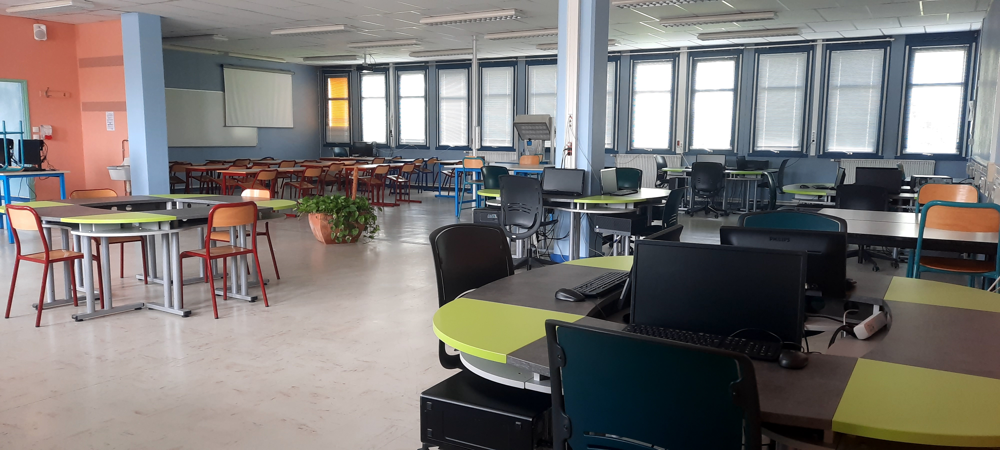

• SNT (Sciences Numériques et Technologiques)Cet enseignement vous donne un aperçu du monde informatique et numérique qui vous entoure.
Le programme, s’articule autour de sept thématiques :
------ Internet.------ Le web.------ Les réseaux sociaux (dont la question de la cyberviolence et du harcèlement).------ Les données structurées et leur traitement.------ La localisation, cartographie et mobilité.------ L’informatique embarquée et les objets connectés.------ La photographie numérique.

.• CIT (Création et Innovations Technologiques)L’enseignement de Création et Innovation Technologiques s’appuie sur les acquis des programmes de technologie du collège
et est organisé en plusieurs projets, qui permettant d’explorer le champ de l’information. .• SI (Sciences de l'Ingénieur)L’enseignement des Sciences de l'Ingénieur s’articule autour de :
------ L'énergétique : les alimentations, les convertisseurs d'énergie, les appareils de protection et de commande. ------ L'automatique : l'acquisition, le traitement et la communication des informations.